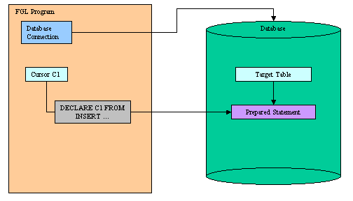
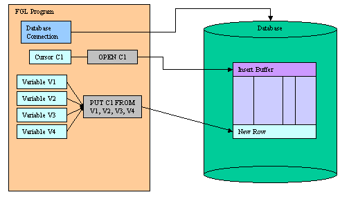
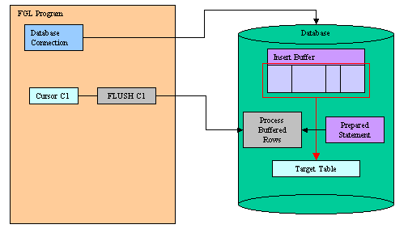
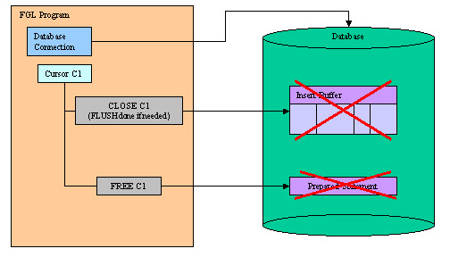

Back to Contents
Summary:
See also: Transactions, Static SQL, Dynamic
SQL, Result Sets, SQL
Errors.
An Insert Cursor is a database cursor declared with a restricted form
of the INSERT
statement, designed to perform buffered row insertion in database tables.
The insert cursor simply inserts rows of data; it cannot be used to fetch
data. When an insert cursor is opened, a buffer is created in memory to hold
a block of rows. The buffer receives rows of data as the program executes PUT
statements. The rows are written to disk only when the buffer is full. You can
use the CLOSE, FLUSH, or COMMIT
WORK statement to flush the buffer when it is less than full. You must close
an insert cursor to insert any buffered rows into the database before the
program ends. You can lose data if you do not close the cursor properly.
When
the database server supports buffered inserts, an insert cursor increases processing efficiency (compared with embedding the
INSERT statement directly). This process reduces communication between the
program and the database server and also increases the speed of the insertions.
Before using the insert cursor, you must declare it with the DECLARE
instruction using an INSERT statement:

Once declared, you can open the insert cursor with the OPEN
instruction. This instruction prepares the insert buffer. When the insert cursor
is opened, you can add rows to the insert buffer with the PUT statement:

Rows are automatically added to the database table when the insert buffer is full.
To force row insertion in the table, you can use the FLUSH instruction:

Finally, when all rows are added, you can CLOSE the cursor and if you
no longer need
it, you can de-allocate resources with the FREE
instruction:

By default, insert cursors must be opened inside a transaction
block, with BEGIN WORK and COMMIT WORK, and they are automatically
closed at the end of the transaction. If needed, you can declare insert cursors with the
WITH HOLD clause, to allow uninterrupted row insertion across multiple
transactions. See example 3 at the bottom of this page.
Purpose:
Declares a new insert cursor in the current
database session.
Syntax:
DECLARE cid CURSOR [WITH
HOLD] FOR { insert-statement
| sid }
Notes:
- cid is the identifier of the insert cursor.
- insert-statement is an INSERT statement defined in Static
SQL.
- sid is the identifier of a prepared
INSERT statement including (?) question mark placeholders
in the VALUES clause.
- The INSERT statement is parsed, validated and the execution plan is created.
- DECLARE must precede any other statement that refers to the
cursor during program execution.
- The scope of reference of the cid cursor identifier is local to
the module where it is declared.
- When declaring a cursor with a static insert-statement, the
statement can include a list of variables in
the VALUES clause. These variables are automatically read by the PUT
statement; you do not have to provide the list of variables in that
statement. See Example 1 for more details.
- When declaring a cursor with a prepared sid statement, the
statement can include (?) question mark placeholders for SQL
parameters. In this case you must provide a list of variables
in the FROM clause of the PUT statement.
See Example 2 for more details.
- Use the WITH HOLD option to declare cursors that have
uninterrupted inserts across multiple transactions.
- Resources allocated by the DECLARE can be released later by
the FREE instruction.
Warnings:
- The number of declared cursors in a single program is limited by the
database server and the available memory. Make sure that you free
the resources when you no longer
need the declared insert cursor.
- The identifier of a cursor that was declared in one module cannot be referenced from another
module.
Purpose:
Opens an insert cursor in the current
database session.
Syntax:
OPEN cid
- cid is the identifier of the insert cursor.
- A subsequent OPEN statement closes the cursor and then reopens
it.
- With the CLOSE instruction, you can release
resources allocated for the insert buffer on
the database server.
Warnings:
- When used with an insert cursor, the OPEN instruction
cannot include a USING clause.
- If the insert cursor was not declared WITH HOLD option, the OPEN
instruction generates an SQL error if there is no current transaction
started.
- If you release cursor resources with a FREE
instruction, you cannot use the cursor unless you declare
the cursor again.
Purpose:
Adds a new row to the insert cursor buffer in the current
database session.
Syntax:
PUT cid FROM paramvar [,...]
Notes:
- cid is the identifier of the insert cursor.
- paramvar is a program variable, a record
or an array used as a
parameter buffer to provide
SQL parameter values.
Warnings:
- If the insert cursor was not declared WITH HOLD option, the PUT
instruction generates an SQL error if there is no current transaction
started.
- If the insert buffer has no room for the new row when the statement
executes, the buffered rows are written to the database in a block, and the
buffer is emptied. As a result, some PUT statement executions cause
rows to be written to the database, and some do not.
Purpose:
Flushes the buffer of an insert cursor in the current
database session.
Syntax:
FLUSH cid
Notes:
- cid is the identifier of the insert cursor.
- All buffered rows are inserted into the target table.
- The insert buffer is cleared.
Warnings:
- The insert buffer may be automatically flushed by the runtime system if there no room
when a new row is added with the PUT
instruction.
Purpose:
Closes an insert cursor in the current
database session.
Syntax:
CLOSE cid
Notes:
- cid is the identifier of the insert cursor.
- If rows are present in the insert buffer, they are inserted into the
target table.
- The insert buffer is discarded.
- This instruction releases the resources allocated for the insert buffer on
the database server.
- After using the CLOSE instruction, you must re-open the cursor
with OPEN before adding new rows with
PUT / FLUSH.
Purpose:
Releases resources allocated for an insert cursor in the current
database session.
Syntax:
FREE cid
Notes:
- cid is the identifier of the insert cursor.
- All resources allocated to the insert cursor are released.
- The cursor should be explicitly closed before it
is freed.
Warnings:
- If you release cursor resources with this
instruction, you cannot use the cursor unless you declare
the cursor again.
Example 1: Insert Cursor declared with a Static INSERT
01 MAIN
02 DEFINE i INTEGER
03 DEFINE rec RECORD
04 key INTEGER,
05 name CHAR(30)
06 END RECORD
07 DATABASE stock
08 DECLARE ic CURSOR FOR
09 INSERT INTO item VALUES (rec.*)
10 BEGIN WORK
11 OPEN ic
12 FOR i=1 TO 100
13 LET rec.key = i
14 LET rec.name = "Item #" || i
15 PUT ic
16 IF i MOD 50 = 0 THEN
17 FLUSH ic
18 END IF
19 END FOR
20 CLOSE ic
21 COMMIT WORK
22 FREE ic
23 END MAIN
Example 2: Insert Cursor declared with a Prepared INSERT
01 MAIN
02 DEFINE i INTEGER
03 DEFINE rec RECORD
04 key INTEGER,
05 name CHAR(30)
06 END RECORD
07 DATABASE stock
08 PREPARE is FROM "INSERT INTO item VALUES (?,?)"
09 DECLARE ic CURSOR FOR is
10 BEGIN WORK
11 OPEN ic
12 FOR i=1 TO 100
13 LET rec.key = i
14 LET rec.name = "Item #" || i
15 PUT ic FROM rec.*
16 IF i MOD 50 = 0 THEN
17 FLUSH ic
18 END IF
19 END FOR
20 CLOSE ic
21 COMMIT WORK
22 FREE ic
23 FREE is
24 END MAIN
Example 3: Insert Cursor declared with 'hold' option
01 MAIN
02 DEFINE name CHAR(30)
03 DATABASE stock
04 DECLARE ic CURSOR WITH HOLD FOR
05 INSERT INTO item VALUES (1,name)
06 OPEN ic
07 LET name = "Item 1"
08 PUT ic
09 BEGIN WORK
10 UPDATE refs SET name="xyz" WHERE key=123
11 COMMIT WORK
12 PUT ic
13 PUT ic
14 FLUSH ic
15 CLOSE ic
16 FREE ic
17 END MAIN